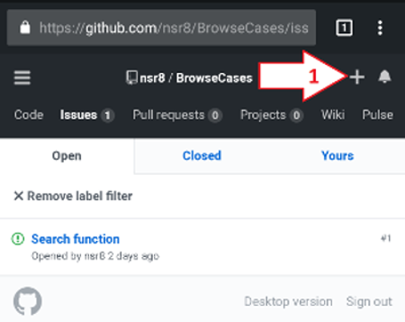
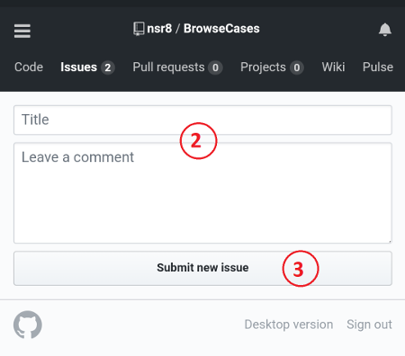

Give feedback, report bugs, corrections, and suggest edits
You can provide feedback, report bugs, corrections and suggest edits to notes at https://github.com/nsr8/BrowseCases/issues.
Thank you for helping me improve this app!

